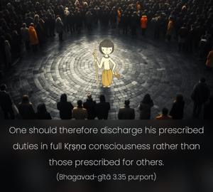

It is far better to discharge one’s prescribed duties, even though faultily, than another’s duties perfectly. Destruction in the course of performing one’s own duty is better than engaging in another’s duties, for to follow another’s path is dangerous.

One should therefore discharge his prescribed duties in full Kṛṣṇa consciousness rather than those prescribed for others. Materially, prescribed duties are duties enjoined according to one’s psychophysical condition, under the spell of the modes of material nature. Spiritual duties are as ordered by the spiritual master for the transcendental service of Kṛṣṇa. But whether material or spiritual, one should stick to his prescribed duties even up to death, rather than imitate another’s prescribed duties. Duties on the spiritual platform and duties on the material platform may be different, but the principle of following the authorized direction is always good for the performer. When one is under the spell of the modes of material nature, one should follow the prescribed rules for his particular situation and should not imitate others. For example, a brāhmaṇa, who is in the mode of goodness, is nonviolent, whereas a kṣatriya, who is in the mode of passion, is allowed to be violent. As such, for a kṣatriya it is better to be vanquished following the rules of violence than to imitate a brāhmaṇa who follows the principles of nonviolence. Everyone has to cleanse his heart by a gradual process, not abruptly. However, when one transcends the modes of material nature and is fully situated in Kṛṣṇa consciousness, he can perform anything and everything under the direction of a bona fide spiritual master. In that complete stage of Kṛṣṇa consciousness, the kṣatriya may act as a brāhmaṇa, or a brāhmaṇa may act as a kṣatriya. In the transcendental stage, the distinctions of the material world do not apply. For example, Viśvāmitra was originally a kṣatriya, but later on he acted as a brāhmaṇa, whereas Paraśurāma was a brāhmaṇa but later on he acted as a kṣatriya. Being transcendentally situated, they could do so; but as long as one is on the material platform, he must perform his duties according to the modes of material nature. At the same time, he must have a full sense of Kṛṣṇa consciousness.